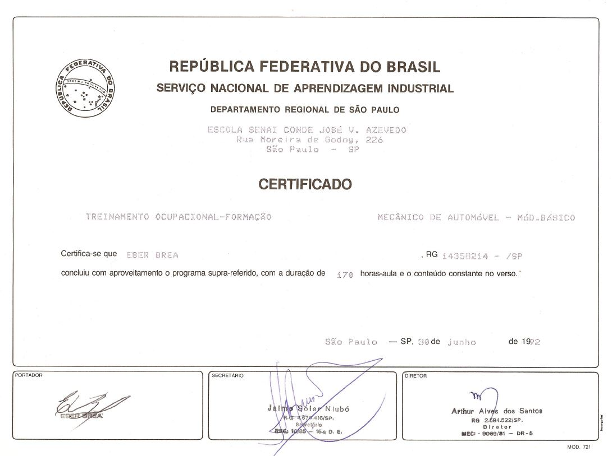
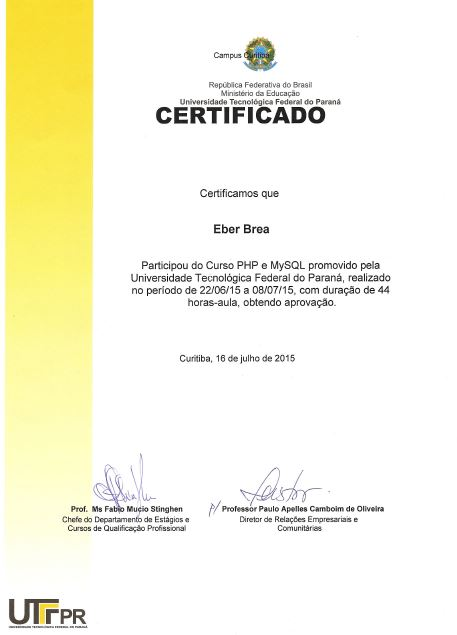

- Curso de Energia Solar – Blue Sol (EAD) – (Ribeirão Preto – SP) – 2017
- Curso de PHP e MySQL – UTFPR- (Curitiba-PR) – 2015
- Contabilidade Avançada, Direito e Comércio Internacional - TS Cursos Preparatórios (Curitiba-PR) - 2008
- Curso Básico de Motores – Centro de Treinamento Renault (Jundiaí-SP) - 2001
- Como Vender Mais Melhorando suas Relações Interpessoais - Ford (Foz do Iguaçú - PR) - 1994
- Gestão de Qualidade Total - Fundação Christiano Ottoni (São Paulo - SP) - 1994
- Administração de Negócios para Distribuidores - Ford (Foz do Iguaçu - PR) - 1994
- Técnicas de Liderança - Dalton Velloso & Consultores Associados (S. B. Campo - SP) - 1993
- Mecânica Automobilística - SENAI (Mauá - SP) - 1992
- Técnicas de Comunicação Verbal - Dalton Velloso & Consultores Associados (S. B. Campo - SP) -1992
Certificados

